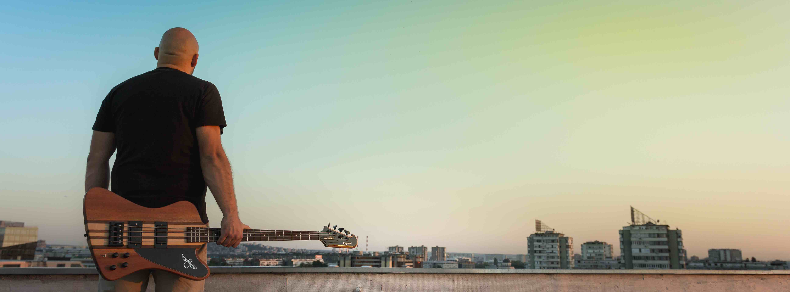

Grupa Tri nastala je 2011. godine u Beogradu. U startu su se opredelili za cvrst gitarski zvuk koji bez kompromisa stvaraju i danas. Bend pre svega svira i postoji iz ljubavi prema muzici i izvodjenju i samim tim rusi koncept “tezga” bendova, dok je repertoar ono sto ih cini upecatljivim i posebnim. Clanovi benda su takodje I clanovi nekoliko popularih muzickih sastava iz Beograda (Viva Vox hor, MVP) Kombinacijom obrada pesama najpopularnijih inostranih rock izvodjaca i MTV hitova aranziranih u tvrdom gitarskom maniru stvaraju odlicnu atmosferu, a izvode i poneku njima omiljenu domacu pesmu. Grupa Tri je zajedno sa grupom S.A.R.S imala zapazen nastup u Domu omladine u Beogradu, u okviru jedne od zurki organizacije Srbija za mlade. Takodje, nastupali su na sajmu turizma, na manifestaciji Kulturno leto u Lazarevcu, kao i po svim vecim klubovima sirom Srbije. Trojka su: Ivan Propadovic (gitara, vokal) Marko Brakovic (bubanj, prateci vokal) Inspektor Domingez (bas gitara)